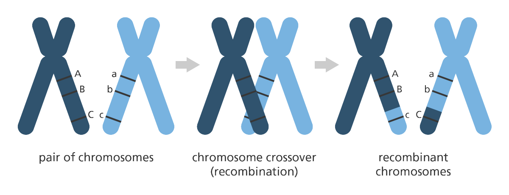

Genetik Haritalama
İlk genetik harita, 1913 yılında Alfred Sturtevant tarafından yaratıldı ve
meyve sineğinden (Lat. Drosophila melanogaster) alınan bir kromozoma aitti.
Sturtevant, genlerin kromozomlar üzerinde çizgisel biçimde yerleşmiş olduğunu saptadı; tıpkı ipe dizilmiş boncuklar gibi
Ayrıca belirli özelliklerden sorumlu genler, belirli yerlerde bulunuyordu.
İki gen arasındaki parça değişimi (karşılıklı geçişim, rekombinasyon, İng. crossing over) sıklığının
bunların bir kromozom üzerindeki konumlarının saptanmasına yardımcı olabileceğini ileri sürdü.
Bir kromozom üzerinde birbirlerinden çok uzak bulunan genlerin, ayrı ayrı kalıtılmaya eğilimli olduklarının farkına vardı.
Bunun nedeni, basitçe rekombinasyonun gerçekleşmesi için arada daha büyük bir bölge kalmasıydı.
